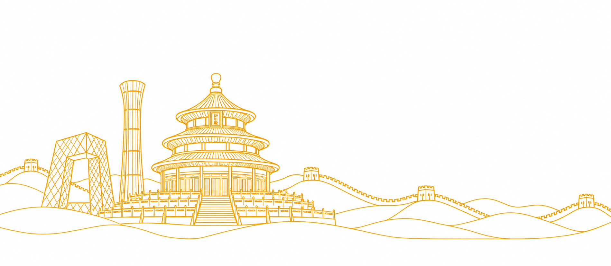
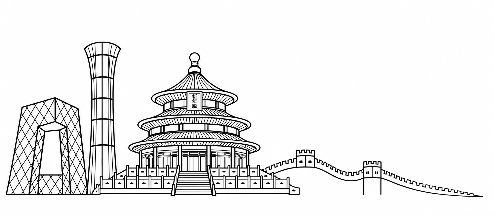
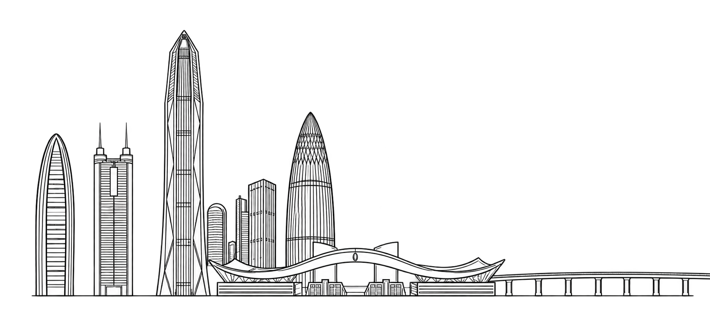
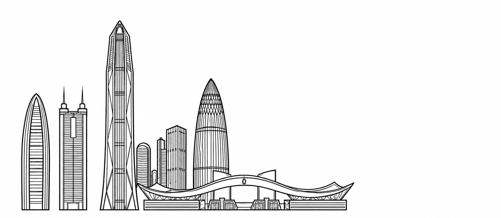

V5 · 城市生图与细节复核
北京、深圳以生成原稿决定建筑形态和细节，再独立提取金线、填色与孔洞。保留自然曲线、立面分格、屋瓦、栏杆和台阶；不使用上一轮程序化简化建筑作为当前图样。
独立 V5 在线预览。图样已经过 Agent 视觉检查与技术验证，仍可继续修订；这不代表用户最终视觉确认或工厂生产验收。黑线是制作源稿，杯面描线固定为金色。
北京：构图来源与本轮生图

原始构图参考保留原文件；去除前景波浪的方向继续沿用。
本轮北京生图祈年殿参考原 PSD 的屋顶与栏杆细节；长城保留两座可见城楼，末段连续下降，无横直地平线。深圳：保留原稿细节，移除右桥

原深圳线条参考塔楼曲线、折面与市民中心细节作为风格依据。
本轮深圳生图保留细密立面、屋檐、柱廊与台阶；右桥已移除，建筑到市民中心自然结束。轮廓提取与独立填面
统一 SVG 坐标模板北京轮廓母版深圳轮廓母版原 PSD 祈年殿参考
制作与发布顺序
生图与局部修订 → 人工查看曲线、细节与收尾 → 绑定原稿哈希 → 结构线／填面／孔洞编译 → 素材与应用测试 → 杯面浏览器验证 → 独立 V5 发布 → 服务端文件核对与在线复测。源稿改变后，旧检查记录不能直接沿用。
| 阶段 | 约定 |
|---|
| 本轮原稿 | 北京 1899 × 828；深圳 1900 × 828。白底便于保留精细边缘，再提取遮罩。 |
| 统一母版 | 5433 × 2365，来自原 PSD 城市区域；只做比例归位和原稿轮廓提取。 |
| 运行通道 | 4096 × 1783；结构、填色、法线相互对齐。输出尺寸不冒充生图原生分辨率。 |
| 创作控制 | 五色与 HSL 调色；固定金线；彩釉到金属连续转换；0–2 倍视觉浮雕。 |